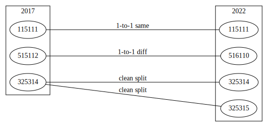
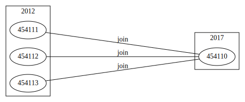
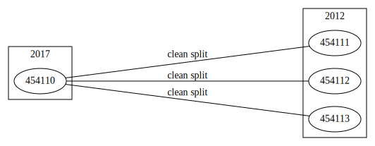
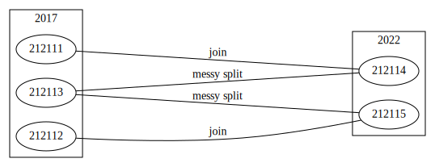

1997 code | 2002 code | 2007 code | 2012 code | 2017 code | 2022 code | 2007 index | 2012 index | 2017 index | 2022 index | 2017 descriptions | 2022 descriptions | 2017 summary | 2022 summary | NAICS
Overview
The North American Industry Classification System (NAICS) is the standard used by Federal statistical agencies in classifying business establishments for the purpose of collecting, analyzing, and publishing statistical data related to the U.S. business economy. NAICS was developed under the auspices of the Office of Management and Budget (OMB), and adopted in 1997 to replace the Standard Industrial Classification (SIC) system. It was developed jointly by the U.S. Economic Classification Policy Committee (ECPC), Statistics Canada, and Mexico’s Instituto Nacional de Estadistica y Geografia, to allow for a high level of comparability in business statistics among the North American countries.
The structure of NAICS is hierarchical. The first two digits of the structure designate the 20 NAICS sectors that represent general categories of economic activities. NAICS uses a six-digit coding system to identify industries and their placement in this hierarchical structure of the classification system. The first two digits of the code designate the sector, the third digit designates the subsector, the fourth digit designates the industry group, the fifth digit designates the NAICS industry, and the sixth digit designates the national industry. On the highest 2-digit level there are 20 sectors. Classification is comparable between the USA, Canada and Mexico up to a 5-digit level, with some exceptions. A zero as the sixth digit generally indicates that the NAICS industry and the U.S. industry are the same.
| Digits | Level |
|---|---|
| 2 | sector |
| 3 | subsector |
| 4 | industry group |
| 5 | NAICS industry |
| 6 | national industry |
Classification is revised every five years and is currently available for 1997, 2002, 2007, 2012, 2017 and 2022.
Source files
This module provides access to dataframes built from source files.
Manual. A PDF with complete information about the classification. All other files are parts of the manual. Available from 2017.
Code file. Table of 2-6 digit codes and corresponding sector, subsector, industry group and industry titles. Available for all* years. Subset files with only 6-digit industries are also available.
Structure. Essentially the same as Code file with addition of indicators for trilateral aggreement (comparability between US, Canada and Mexico) and change from previous revision. Available from 2017.
Structure Summary. Counts of subsectors, industry groups and industries in each sector. Available from 2017.
Definitions. A PDF with full descriptions of every industry. Available for all* years.
Descriptions. Table that contains everything from the Definitions file, except Cross-References. Available from 2017.
Cross-References. Table that contains industry cross-references from the Definitions file. Available from 2017.
Index file. Table of 6-digit industry codes and description of index items withing each industry (usually multiple). Available from 2007.
* IMPORTANT. For 1997, only definitions PDFs by sector are available in the NAICS section of the Census website. More useful code file in table form can be found in the CBP program documentation. However, this version is missing industries not covered by CBP. Notably, farming subsectors “111: Crop production” and “112: Animal production” are not included. Data source for 1997 should be updated to a complete one once found.
Structure summary
Total counts of classes at every level by sector, same format as analogous source tables.
| Sector | Name | Subsectors (3-digit) | Industry Groups (4-digit) | NAICS Industries (5-digit) | 6-digit Industries (U.S. Detail) | 6-digit Industries (Same as 5-digit) | 6-digit Industries (Total) | |
|---|---|---|---|---|---|---|---|---|
| 0 | 11 | Forestry, fishing, hunting, and agriculture support | 3 | 8 | 8 | 9 | 6 | 15 |
| 1 | 21 | Mining | 3 | 5 | 10 | 28 | 1 | 29 |
| 2 | 22 | Utilities | 1 | 3 | 6 | 6 | 4 | 10 |
| 3 | 23 | Construction | 3 | 14 | 28 | 0 | 28 | 28 |
| 4 | 31-33 | Manufacturing | 21 | 86 | 184 | 406 | 67 | 473 |
| 5 | 42 | Wholesale trade | 2 | 18 | 69 | 0 | 69 | 69 |
| 6 | 44-45 | Retail trade | 12 | 27 | 61 | 19 | 53 | 72 |
| 7 | 48-49 | Transportation & warehousing * | 9 | 27 | 40 | 23 | 31 | 54 |
| 8 | 51 | Information | 4 | 9 | 28 | 12 | 22 | 34 |
| 9 | 52 | Finance & insurance | 5 | 10 | 28 | 15 | 23 | 38 |
| 10 | 53 | Real estate & rental & leasing | 3 | 8 | 19 | 9 | 15 | 24 |
| 11 | 54 | Professional, scientific & technical services | 1 | 9 | 34 | 17 | 29 | 46 |
| 12 | 55 | Management of companies & enterprises | 1 | 1 | 1 | 3 | 0 | 3 |
| 13 | 56 | Admin, support, waste mgt, remediation services | 2 | 11 | 29 | 23 | 20 | 43 |
| 14 | 61 | Educational services | 1 | 7 | 12 | 7 | 10 | 17 |
| 15 | 62 | Health care and social assistance | 4 | 18 | 30 | 16 | 23 | 39 |
| 16 | 71 | Arts, entertainment & recreation | 3 | 9 | 23 | 3 | 22 | 25 |
| 17 | 72 | Accommodation & food services | 2 | 7 | 11 | 7 | 8 | 15 |
| 18 | 81 | Other services (except public administration) * | 3 | 13 | 29 | 30 | 18 | 48 |
| 19 | 95 | Auxiliaries (exc corporate, subsidiary & regional mgt) | 0 | 0 | 0 | 0 | 0 | 0 |
| 20 | Total | 83 | 290 | 650 | 633 | 449 | 1082 |
| Sector | Name | Subsectors (3-digit) | Industry Groups (4-digit) | NAICS Industries (5-digit) | 6-digit Industries (U.S. Detail) | 6-digit Industries (Same as 5-digit) | 6-digit Industries (Total) | |
|---|---|---|---|---|---|---|---|---|
| 0 | 11 | Agriculture, Forestry, Fishing and Hunting | 5 | 19 | 42 | 32 | 32 | 64 |
| 1 | 21 | Mining | 3 | 5 | 10 | 28 | 1 | 29 |
| 2 | 22 | Utilities | 1 | 3 | 6 | 6 | 4 | 10 |
| 3 | 23 | Construction | 3 | 10 | 28 | 4 | 27 | 31 |
| 4 | 31-33 | Manufacturing | 21 | 86 | 184 | 406 | 67 | 473 |
| 5 | 42 | Wholesale Trade | 3 | 19 | 71 | 0 | 71 | 71 |
| 6 | 44-45 | Retail Trade | 12 | 27 | 61 | 24 | 51 | 75 |
| 7 | 48-49 | Transportation and Warehousing | 11 | 29 | 42 | 25 | 32 | 57 |
| 8 | 51 | Information | 7 | 16 | 30 | 12 | 24 | 36 |
| 9 | 52 | Finance and Insurance | 5 | 11 | 32 | 15 | 27 | 42 |
| 10 | 53 | Real Estate and Rental and Leasing | 3 | 8 | 19 | 9 | 15 | 24 |
| 11 | 54 | Professional, Scientific, and Technical Services | 1 | 9 | 35 | 17 | 30 | 47 |
| 12 | 55 | Management of Companies and Enterprises | 1 | 1 | 1 | 3 | 0 | 3 |
| 13 | 56 | Administrative and Support and Waste Management and Remediation Services | 2 | 11 | 29 | 23 | 20 | 43 |
| 14 | 61 | Educational Services | 1 | 7 | 12 | 7 | 10 | 17 |
| 15 | 62 | Health Care and Social Assistance | 4 | 18 | 30 | 16 | 23 | 39 |
| 16 | 71 | Arts, Entertainment, and Recreation | 3 | 9 | 23 | 3 | 22 | 25 |
| 17 | 72 | Accommodation and Food Services | 2 | 7 | 11 | 7 | 8 | 15 |
| 18 | 81 | Other Services (except Public Administration) | 4 | 14 | 30 | 30 | 19 | 49 |
| 19 | 92 | Public Administration | 8 | 8 | 29 | 0 | 29 | 29 |
| 20 | Total | 100 | 317 | 725 | 667 | 512 | 1179 |
| Sector | Name | Subsectors (3-digit) | Industry Groups (4-digit) | NAICS Industries (5-digit) | 6-digit Industries (U.S. Detail) | 6-digit Industries (Same as 5-digit) | 6-digit Industries (Total) | |
|---|---|---|---|---|---|---|---|---|
| 0 | 11 | Agriculture, Forestry, Fishing and Hunting | 5 | 19 | 42 | 32 | 32 | 64 |
| 1 | 21 | Mining, Quarrying, and Oil and Gas Extraction | 3 | 5 | 10 | 28 | 1 | 29 |
| 2 | 22 | Utilities | 1 | 3 | 6 | 6 | 4 | 10 |
| 3 | 23 | Construction | 3 | 10 | 28 | 4 | 27 | 31 |
| 4 | 31-33 | Manufacturing | 21 | 86 | 184 | 405 | 67 | 472 |
| 5 | 42 | Wholesale Trade | 3 | 19 | 71 | 0 | 71 | 71 |
| 6 | 44-45 | Retail Trade | 12 | 27 | 61 | 24 | 51 | 75 |
| 7 | 48-49 | Transportation and Warehousing | 11 | 29 | 42 | 25 | 32 | 57 |
| 8 | 51 | Information | 6 | 12 | 27 | 10 | 22 | 32 |
| 9 | 52 | Finance and Insurance | 5 | 11 | 31 | 15 | 26 | 41 |
| 10 | 53 | Real Estate and Rental and Leasing | 3 | 8 | 19 | 9 | 15 | 24 |
| 11 | 54 | Professional, Scientific, and Technical Services | 1 | 9 | 35 | 19 | 29 | 48 |
| 12 | 55 | Management of Companies and Enterprises | 1 | 1 | 1 | 3 | 0 | 3 |
| 13 | 56 | Administrative and Support and Waste Management and Remediation Services | 2 | 11 | 29 | 25 | 19 | 44 |
| 14 | 61 | Educational Services | 1 | 7 | 12 | 7 | 10 | 17 |
| 15 | 62 | Health Care and Social Assistance | 4 | 18 | 30 | 16 | 23 | 39 |
| 16 | 71 | Arts, Entertainment, and Recreation | 3 | 9 | 23 | 3 | 22 | 25 |
| 17 | 72 | Accommodation and Food Services | 2 | 7 | 11 | 7 | 8 | 15 |
| 18 | 81 | Other Services (except Public Administration) | 4 | 14 | 30 | 30 | 19 | 49 |
| 19 | 92 | Public Administration | 8 | 8 | 29 | 0 | 29 | 29 |
| 20 | Total | 99 | 313 | 721 | 668 | 507 | 1175 |
| Sector | Name | Subsectors (3-digit) | Industry Groups (4-digit) | NAICS Industries (5-digit) | 6-digit Industries (U.S. Detail) | 6-digit Industries (Same as 5-digit) | 6-digit Industries (Total) | |
|---|---|---|---|---|---|---|---|---|
| 0 | 11 | Agriculture, Forestry, Fishing and Hunting | 5 | 19 | 42 | 32 | 32 | 64 |
| 1 | 21 | Mining, Quarrying, and Oil and Gas Extraction | 3 | 5 | 10 | 28 | 1 | 29 |
| 2 | 22 | Utilities | 1 | 3 | 6 | 10 | 4 | 14 |
| 3 | 23 | Construction | 3 | 10 | 28 | 4 | 27 | 31 |
| 4 | 31-33 | Manufacturing | 21 | 86 | 180 | 269 | 95 | 364 |
| 5 | 42 | Wholesale Trade | 3 | 19 | 71 | 0 | 71 | 71 |
| 6 | 44-45 | Retail Trade | 12 | 27 | 58 | 20 | 49 | 69 |
| 7 | 48-49 | Transportation and Warehousing | 11 | 29 | 42 | 25 | 32 | 57 |
| 8 | 51 | Information | 6 | 12 | 27 | 10 | 22 | 32 |
| 9 | 52 | Finance and Insurance | 5 | 11 | 31 | 15 | 26 | 41 |
| 10 | 53 | Real Estate and Rental and Leasing | 3 | 8 | 19 | 9 | 15 | 24 |
| 11 | 54 | Professional, Scientific, and Technical Services | 1 | 9 | 35 | 19 | 29 | 48 |
| 12 | 55 | Management of Companies and Enterprises | 1 | 1 | 1 | 3 | 0 | 3 |
| 13 | 56 | Administrative and Support and Waste Management and Remediation Services | 2 | 11 | 29 | 25 | 19 | 44 |
| 14 | 61 | Educational Services | 1 | 7 | 12 | 7 | 10 | 17 |
| 15 | 62 | Health Care and Social Assistance | 4 | 18 | 30 | 16 | 23 | 39 |
| 16 | 71 | Arts, Entertainment, and Recreation | 3 | 9 | 23 | 3 | 22 | 25 |
| 17 | 72 | Accommodation and Food Services | 2 | 6 | 10 | 8 | 7 | 15 |
| 18 | 81 | Other Services (except Public Administration) | 4 | 14 | 30 | 30 | 19 | 49 |
| 19 | 92 | Public Administration | 8 | 8 | 29 | 0 | 29 | 29 |
| 20 | Total | 99 | 312 | 713 | 533 | 532 | 1065 |
| Sector | Name | Subsectors (3-digit) | Industry Groups (4-digit) | NAICS Industries (5-digit) | 6-digit Industries (U.S. Detail) | 6-digit Industries (Same as 5-digit) | 6-digit Industries (Total) | |
|---|---|---|---|---|---|---|---|---|
| 0 | 11 | Agriculture, Forestry, Fishing and Hunting | 5 | 19 | 42 | 32 | 32 | 64 |
| 1 | 21 | Mining, Quarrying, and Oil and Gas Extraction | 3 | 5 | 11 | 24 | 4 | 28 |
| 2 | 22 | Utilities | 1 | 3 | 6 | 10 | 4 | 14 |
| 3 | 23 | Construction | 3 | 10 | 28 | 4 | 27 | 31 |
| 4 | 31-33 | Manufacturing | 21 | 86 | 180 | 264 | 96 | 360 |
| 5 | 42 | Wholesale Trade | 3 | 19 | 71 | 0 | 71 | 71 |
| 6 | 44-45 | Retail Trade | 12 | 27 | 57 | 17 | 49 | 66 |
| 7 | 48-49 | Transportation and Warehousing | 11 | 29 | 42 | 25 | 32 | 57 |
| 8 | 51 | Information | 6 | 11 | 25 | 12 | 19 | 31 |
| 9 | 52 | Finance and Insurance | 5 | 11 | 31 | 15 | 26 | 41 |
| 10 | 53 | Real Estate and Rental and Leasing | 3 | 8 | 17 | 11 | 13 | 24 |
| 11 | 54 | Professional, Scientific, and Technical Services | 1 | 9 | 35 | 20 | 29 | 49 |
| 12 | 55 | Management of Companies and Enterprises | 1 | 1 | 1 | 3 | 0 | 3 |
| 13 | 56 | Administrative and Support and Waste Management and Remediation Services | 2 | 11 | 29 | 25 | 19 | 44 |
| 14 | 61 | Educational Services | 1 | 7 | 12 | 7 | 10 | 17 |
| 15 | 62 | Health Care and Social Assistance | 4 | 18 | 30 | 16 | 23 | 39 |
| 16 | 71 | Arts, Entertainment, and Recreation | 3 | 9 | 23 | 3 | 22 | 25 |
| 17 | 72 | Accommodation and Food Services | 2 | 6 | 10 | 8 | 7 | 15 |
| 18 | 81 | Other Services (except Public Administration) | 4 | 14 | 30 | 30 | 19 | 49 |
| 19 | 92 | Public Administration | 8 | 8 | 29 | 0 | 29 | 29 |
| 20 | Total | 99 | 311 | 709 | 526 | 531 | 1057 |
| Sector | Name | Subsectors (3-digit) | Industry Groups (4-digit) | NAICS Industries (5-digit) | 6-digit Industries (U.S. Detail) | 6-digit Industries (Same as 5-digit) | 6-digit Industries (Total) | |
|---|---|---|---|---|---|---|---|---|
| 0 | 11 | Agriculture, Forestry, Fishing and Hunting | 5 | 19 | 42 | 32 | 32 | 64 |
| 1 | 21 | Mining, Quarrying, and Oil and Gas Extraction | 3 | 5 | 11 | 14 | 7 | 21 |
| 2 | 22 | Utilities | 1 | 3 | 6 | 10 | 4 | 14 |
| 3 | 23 | Construction | 3 | 10 | 28 | 4 | 27 | 31 |
| 4 | 31-33 | Manufacturing | 21 | 86 | 176 | 248 | 98 | 346 |
| 5 | 42 | Wholesale Trade | 3 | 19 | 69 | 0 | 69 | 69 |
| 6 | 44-45 | Retail Trade | 9 | 24 | 48 | 16 | 41 | 57 |
| 7 | 48-49 | Transportation and Warehousing | 11 | 29 | 42 | 25 | 32 | 57 |
| 8 | 51 | Information | 6 | 11 | 24 | 10 | 19 | 29 |
| 9 | 52 | Finance and Insurance | 5 | 11 | 27 | 13 | 22 | 35 |
| 10 | 53 | Real Estate and Rental and Leasing | 3 | 8 | 17 | 11 | 13 | 24 |
| 11 | 54 | Professional, Scientific, and Technical Services | 1 | 9 | 35 | 20 | 29 | 49 |
| 12 | 55 | Management of Companies and Enterprises | 1 | 1 | 1 | 3 | 0 | 3 |
| 13 | 56 | Administrative and Support and Waste Management and Remediation Services | 2 | 11 | 29 | 25 | 19 | 44 |
| 14 | 61 | Educational Services | 1 | 7 | 12 | 7 | 10 | 17 |
| 15 | 62 | Health Care and Social Assistance | 4 | 18 | 30 | 16 | 23 | 39 |
| 16 | 71 | Arts, Entertainment, and Recreation | 3 | 9 | 23 | 3 | 22 | 25 |
| 17 | 72 | Accommodation and Food Services | 2 | 6 | 10 | 8 | 7 | 15 |
| 18 | 81 | Other Services (except Public Administration) | 4 | 14 | 30 | 24 | 20 | 44 |
| 19 | 92 | Public Administration | 8 | 8 | 29 | 0 | 29 | 29 |
| 20 | Total | 96 | 308 | 689 | 489 | 523 | 1012 |
Examples
Random sample of codes.
Code
get_df(2022, 'code').sample(5).fillna('')| CODE | TITLE | DIGITS | CODE_2 | CODE_3 | CODE_4 | CODE_5 | CODE_6 | |
|---|---|---|---|---|---|---|---|---|
| 4 | 111110 | Soybean Farming | 6 | 11 | 111 | 1111 | 11111 | 111110 |
| 742 | 334112 | Computer Storage Device Manufacturing | 6 | 31-33 | 334 | 3341 | 33411 | 334112 |
| 1379 | 5161 | Radio and Television Broadcasting Stations | 4 | 51 | 516 | 5161 | ||
| 393 | 315120 | Apparel Knitting Mills | 6 | 31-33 | 315 | 3151 | 31512 | 315120 |
| 1062 | 441 | Motor Vehicle and Parts Dealers | 3 | 44-45 | 441 |
Full hierarchy of a randomly selected 6-digit code.
Code
d = get_df(2022, 'code')
r = d.query('DIGITS == 6').sample()
q = ' or '.join(f'CODE == "{c}"' for c in r.iloc[0, 3:])
d.query(q).fillna('')| CODE | TITLE | DIGITS | CODE_2 | CODE_3 | CODE_4 | CODE_5 | CODE_6 | |
|---|---|---|---|---|---|---|---|---|
| 270 | 31-33 | Manufacturing | 2 | 31-33 | ||||
| 805 | 336 | Transportation Equipment Manufacturing | 3 | 31-33 | 336 | |||
| 845 | 3366 | Ship and Boat Building | 4 | 31-33 | 336 | 3366 | ||
| 846 | 33661 | Ship and Boat Building | 5 | 31-33 | 336 | 3366 | 33661 | |
| 848 | 336612 | Boat Building | 6 | 31-33 | 336 | 3366 | 33661 | 336612 |
6-digit industries in the “115” subsector.
Code
get_df(2022, 'code').query('CODE_3 == "115" and DIGITS == 6')| CODE | TITLE | DIGITS | CODE_2 | CODE_3 | CODE_4 | CODE_5 | CODE_6 | |
|---|---|---|---|---|---|---|---|---|
| 119 | 115111 | Cotton Ginning | 6 | 11 | 115 | 1151 | 11511 | 115111 |
| 120 | 115112 | Soil Preparation, Planting, and Cultivating | 6 | 11 | 115 | 1151 | 11511 | 115112 |
| 121 | 115113 | Crop Harvesting, Primarily by Machine | 6 | 11 | 115 | 1151 | 11511 | 115113 |
| 122 | 115114 | Postharvest Crop Activities (except Cotton Ginning) | 6 | 11 | 115 | 1151 | 11511 | 115114 |
| 123 | 115115 | Farm Labor Contractors and Crew Leaders | 6 | 11 | 115 | 1151 | 11511 | 115115 |
| 124 | 115116 | Farm Management Services | 6 | 11 | 115 | 1151 | 11511 | 115116 |
| 127 | 115210 | Support Activities for Animal Production | 6 | 11 | 115 | 1152 | 11521 | 115210 |
| 130 | 115310 | Support Activities for Forestry | 6 | 11 | 115 | 1153 | 11531 | 115310 |
Index items of “115115” and “115116” industries. Notice duplication in INDEX_ITEM, e.g. “Farm labor contractors” and “Labor contractors, farm”.
Code
d0 = get_df(2022, 'code').query('CODE == "115115" or CODE == "115116"')
d1 = get_df(2022, 'index')
d0.merge(d1, 'left')| CODE | TITLE | DIGITS | CODE_2 | CODE_3 | CODE_4 | CODE_5 | CODE_6 | INDEX_ITEM | |
|---|---|---|---|---|---|---|---|---|---|
| 0 | 115115 | Farm Labor Contractors and Crew Leaders | 6 | 11 | 115 | 1151 | 11511 | 115115 | Agriculture production or harvesting crews |
| 1 | 115115 | Farm Labor Contractors and Crew Leaders | 6 | 11 | 115 | 1151 | 11511 | 115115 | Crew leaders, farm labor |
| 2 | 115115 | Farm Labor Contractors and Crew Leaders | 6 | 11 | 115 | 1151 | 11511 | 115115 | Farm labor contractors |
| 3 | 115115 | Farm Labor Contractors and Crew Leaders | 6 | 11 | 115 | 1151 | 11511 | 115115 | Labor contractors, farm |
| 4 | 115116 | Farm Management Services | 6 | 11 | 115 | 1151 | 11511 | 115116 | Farm management services |
| 5 | 115116 | Farm Management Services | 6 | 11 | 115 | 1151 | 11511 | 115116 | Management services, farm |
Concordances
Concordances, also known as crosswalks, are tables that link industries of a given revision of NAICS to other revisions or other classifications. Census page lists the following concordances.
Between consecutive NAICS revisions: 2017-2022, 2012-2017, 2007-2012, 2002-2007, 1997-2002.
Between 1997 or 2002 NAICS and 1987 SIC.
From NAICS to ISIC (United Nations’ International Standard Industrial Classification of All Economic Activities).
From 2002 NAICS to NACE (Statistical Classification of Economic Activities in the European Community).
Concordances are symmetric, i.e. X-to-Y concordance table differs from Y-to-X table only by row ordering.
The main challenge of working with concordances is that links are not always one-to-one. In this module we provide concordance tables with indicators of link types.
('naics', 1997, 'naics', 2002) ('naics', 2002, 'naics', 1997) ('naics', 2002, 'naics', 2007) ('naics', 2007, 'naics', 2002) ('naics', 2007, 'naics', 2012) ('naics', 2012, 'naics', 2007) ('naics', 2012, 'naics', 2017) ('naics', 2017, 'naics', 2012) ('naics', 2017, 'naics', 2022) ('naics', 2022, 'naics', 2017) Sometimes one needs to identify all industries involved in a split directly or indirectly. The function find_concordance_group() returns all connected industries, starting from a given set of codes.
Function viz_concordance() presents links as a diagram.
Summary
Tables below summarize types of links between consequtive years in NAICS concordances. The first table shows forward concordances, i.e. from year t to t+5. The second table show backward concordances, i.e. from year t to year t-5.
1-to-1 same: industry and code did not change between years, this is the most common case.1-to-1 diff: industry did not change, but it’s numerical code changes.clean split: industry was split into multiple, but all parts only came for the one source industry.messy split: industry was split, but some parts were joined from other industries.join: industry was joined and became a part of another industry.
| 1997->2002 | 2002->2007 | 2007->2012 | 2012->2017 | 2017->2022 | |
|---|---|---|---|---|---|
| total in "from" | 1169 | 1179 | 1175 | 1065 | 1057 |
| 1-to-1 same | 1043 | 1140 | 976 | 1037 | 916 |
| 1-to-1 diff | 20 | 2 | 10 | 8 | 12 |
| clean split | 3 | 2 | 1 | 0 | 1 |
| messy split | 95 | 11 | 5 | 4 | 8 |
| join | 8 | 24 | 183 | 16 | 120 |
| 2002->1997 | 2007->2002 | 2012->2007 | 2017->2012 | 2022->2017 | |
|---|---|---|---|---|---|
| total in "from" | 1179 | 1175 | 1065 | 1057 | 1012 |
| 1-to-1 same | 1043 | 1140 | 976 | 1037 | 916 |
| 1-to-1 diff | 20 | 2 | 10 | 8 | 12 |
| clean split | 0 | 2 | 67 | 5 | 26 |
| messy split | 22 | 20 | 5 | 4 | 53 |
| join | 94 | 11 | 7 | 3 | 5 |
Examples
1-to-1 links and clean splits
Code
d = get_concordance_df('naics', 2017, 'naics', 2022)
d = pd.concat([
d.query('NAICS_2017 == "115111"'),
d.query('NAICS_2017 == "515112"'),
d.query('NAICS_2017 == "325314"')
])
viz_concordance(d[['NAICS_2017', 'NAICS_2022', 'FLAG_2017_TO_2022']].values, 2017, 2022)
| NAICS_2017 | TITLE_2017 | NAICS_2022 | TITLE_2022 | DUP_2017 | DUP_2022 | FLAG_2017_TO_2022 | |
|---|---|---|---|---|---|---|---|
| 56 | 115111 | Cotton Ginning | 115111 | Cotton Ginning | False | False | 1-to-1 same |
| 792 | 515112 | Radio Stations | 516110 | Radio Broadcasting Stations | False | False | 1-to-1 diff |
| 257 | 325314 | Fertilizer (Mixing Only) Manufacturing - except compost manufacturing | 325314 | Fertilizer (Mixing Only) Manufacturing | True | False | clean split |
| 258 | 325314 | Fertilizer (Mixing Only) Manufacturing - compost manufacturing | 325315 | Compost Manufacturing | True | False | clean split |
Clean joins
From 2012 to 2017 three industries joined into one. However, not every join is clean. The easiest way to identify a clean join from year t0 to t1 is to look for a clean split from year t1 to t0.
Code
d = get_concordance_df('naics', 2012, 'naics', 2017)
d = find_concordance_group(d, 'NAICS_2012', 'NAICS_2017', ['454111'])
viz_concordance(d[['NAICS_2012', 'NAICS_2017', 'FLAG_2012_TO_2017']].values, 2012, 2017)
| NAICS_2012 | TITLE_2012 | NAICS_2017 | TITLE_2017 | DUP_2012 | DUP_2017 | FLAG_2012_TO_2017 | |
|---|---|---|---|---|---|---|---|
| 638 | 454111 | Electronic Shopping | 454110 | Electronic Shopping and Mail-Order Houses | False | True | join |
| 639 | 454112 | Electronic Auctions | 454110 | Electronic Shopping and Mail-Order Houses | False | True | join |
| 640 | 454113 | Mail-Order Houses | 454110 | Electronic Shopping and Mail-Order Houses | False | True | join |
Code
d = get_concordance_df('naics', 2017, 'naics', 2012)
d = find_concordance_group(d, 'NAICS_2017', 'NAICS_2012', ['454110'])
viz_concordance(d[['NAICS_2017', 'NAICS_2012', 'FLAG_2017_TO_2012']].values, 2017, 2012)
| NAICS_2017 | TITLE_2017 | NAICS_2012 | TITLE_2012 | DUP_2017 | DUP_2012 | FLAG_2017_TO_2012 | |
|---|---|---|---|---|---|---|---|
| 638 | 454110 | Electronic Shopping and Mail-Order Houses | 454111 | Electronic Shopping | True | False | clean split |
| 639 | 454110 | Electronic Shopping and Mail-Order Houses | 454112 | Electronic Auctions | True | False | clean split |
| 640 | 454110 | Electronic Shopping and Mail-Order Houses | 454113 | Mail-Order Houses | True | False | clean split |
Messy splits and joins
By construction, messy split links will always come with joins. From 2017 to 2022, three industries (“212111: Bituminous Coal and Lignite Surface Mining”, “212112: Bituminous Coal Underground Mining” and “212113: Anthracite Mining”) were re-classified into two (“212114: Surface Coal Mining” and “212115: Underground Coal Mining”). This creates a problem, for example, when one wants to identify anthracite mining industry under 2022 NAICS, because the two parts of that industry (surface and underground mining) were combined with other types of coal mining.
Code
d = get_concordance_df('naics', 2017, 'naics', 2022)
d = find_concordance_group(d, 'NAICS_2017', 'NAICS_2022', ['212111'])
viz_concordance(d[['NAICS_2017', 'NAICS_2022', 'FLAG_2017_TO_2022']].values, 2017, 2022)
| NAICS_2017 | TITLE_2017 | NAICS_2022 | TITLE_2022 | DUP_2017 | DUP_2022 | FLAG_2017_TO_2022 | |
|---|---|---|---|---|---|---|---|
| 66 | 212111 | Bituminous Coal and Lignite Surface Mining | 212114 | Surface Coal Mining | False | True | join |
| 67 | 212112 | Bituminous Coal Underground Mining | 212115 | Underground Coal Mining | False | True | join |
| 68 | 212113 | Anthracite Mining - anthracite surface mining | 212114 | Surface Coal Mining | True | True | messy split |
| 69 | 212113 | Anthracite Mining - anthracite underground mining | 212115 | Underground Coal Mining | True | True | messy split |
All splits and joins
Every link from 2012 to 2017 concordance that is not 1-to-1.
Build this module
Cells with “nbd-module” tag are converted to an importable Python module.
Converted notebook "nbs/naics.ipynb" to module "pubdata/naics.py".